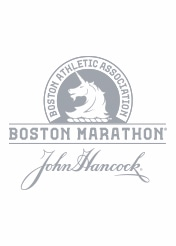
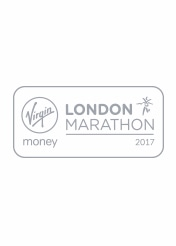

<!DOCTYPE html>
<html lang="es"></html>
<head>
  <meta charset="utf-8">
  <meta name="viewport" content="width= device-width, initial-scale=1">
  <meta http-equiv="X-UA-Compatible" content="IE=edge,chrome=1">
  <meta name="HandheldFriendly" content="true"/>
  <meta name="MobileOptimized" content="320"/>
  <meta name="theme-color" content="#0096D9"/>
  <meta name="msapplication-TileColor" content="#0096D9"/>
  <meta name="msapplication-TileImage" content="./img/marathons-logo.svg"/>
  <meta name="apple-mobile-web-app-capable" content="yes"/>
  <meta name="apple-mobile-web-app-status-bar-style" content="default"/>
  <link rel="apple-touch-startup-image" href="./img/marathons-logo.svg"/>
  <link rel="icon" type="image/x-icon" href="./img/favicon.ico"/>
  <link rel="icon" type="image/png" href="./img/marathons-logo.png"/>
  <link rel="apple-touch-icon" href="./img/marathons-logo.svg"/>
  <link rel="author" type="text/plain" href="./humans.txt"/>
  <link rel="sitemap" type="application/xml" title="Sitemap" href="./sitemap.xml"/>
  <title>Los 6 Mayores  - M A R A T Ó N</title>
  <meta name="description" content="En esta sección te mostramos los 6 maratones más importantes del mundo conocidos como Maratones Mayores">
  <meta name="application-name" content="Los 6 Mayores  - M A R A T Ó N">
  <link rel="stylesheet" href="./style.css">
</head>
<body>
  <header class="Header">
    <section class="Header-container">
      <h1 class="Logo"><a class="Logo-link" href="./">Maratones</a></h1><a class="Panel-button" href="#">
        <button class="hamburger hamburger--spring" type="button"><span class="hamburger-box"><span class="hamburger-inner"></span></span></button></a>
      <aside class="Panel">
        <nav class="Menu">
          <ul class="Menu-listItem">
            <li class="Menu-item"><a class="Menu-link" href="index.html">Inicio</a></li>
            <li class="Menu-item"><a class="Menu-link" href="acerca.html">Acerca</a></li>
            <li class="Menu-item"><a class="Menu-link" href="maratones.html">Maratones</a></li>
            <li class="Menu-item"><a class="Menu-link" href="mujeres.html">Mujeres</a></li>
            <li class="Menu-item"><a class="Menu-link" href="el-mas-veloz.html">El mas Veloz</a></li>
            <li class="Menu-item"><a class="Menu-link" href="contacto.html">Contacto</a></li>
          </ul>
        </nav>
      </aside>
    </section>
  </header>
  <main class="Marathons">
    <article class="Poster u-firstContent" style="background-image: url(./img/maratones-abbott-medal.jpg);">
      <div class="Poster--opacity">
        <h2 class="Poster-title"><span>ABBOTT World</span><br/><span>Marathons Majors</span></h2>
      </div>
    </article>
    <article class="Marathons-logos">
      <div class="Marathons-logosText">
        <p>El <b><i>Abbott World Marathon Majors</i></b> es una serie compuesta por seis de los maratones más grandes y famosos del mundo. Las carreras tienen lugar en Tokio, Boston, Londres, Berlín, Chicago y Nueva York.</p>
      </div>
      <div class="Marathons-logosItem"><a class="Marathons-logosLink" href="http://www.marathon.tokyo/" target="_blank"></a></div>
      <div class="Marathons-logosItem"><a class="Marathons-logosLink" href="http://www.baa.org/" target="_blank"></a></div>
      <div class="Marathons-logosItem"><a class="Marathons-logosLink" href="https://www.virginmoneylondonmarathon.com/" target="_blank"></a></div>
      <div class="Marathons-logosItem"><a class="Marathons-logosLink" href="http://www.bmw-berlin-marathon.com/" target="_blank"></a></div>
      <div class="Marathons-logosItem"><a class="Marathons-logosLink" href="https://www.chicagomarathon.com/" target="_blank"></a></div>
      <div class="Marathons-logosItem"><a class="Marathons-logosLink" href="http://www.tcsnycmarathon.org/" target="_blank"></a></div>
    </article>
    <article class="Poster u-firstContent" style="background-image: url(./img/maratones-tokyo-panorama.jpg);">
      <div class="Poster--opacity">
        <h2 class="Poster-title"><span>Tokyo</span><br/><span><small>desde 2007<br>se corre el último domingo de febrero</small></span></h2>
      </div>
    </article>
    <article class="Poster u-firstContent" style="background-image: url(./img/maratones-boston-panorama.jpg);">
      <div class="Poster--opacity">
        <h2 class="Poster-title"><span>Boston</span><br/><span><small>desde 1897<br>se corre el tercer lunes de abril</small></span></h2>
      </div>
    </article>
    <article class="Poster u-firstContent" style="background-image: url(./img/maratones-london-panorama.jpg);">
      <div class="Poster--opacity">
        <h2 class="Poster-title"><span>Londres</span><br/><span><small>desde 1981<br>se corre el último domingo de abril</small></span></h2>
      </div>
    </article>
    <article class="Poster u-firstContent" style="background-image: url(./img/maratones-berlin-panorama.jpg);">
      <div class="Poster--opacity">
        <h2 class="Poster-title"><span>Berlín</span><br/><span><small>desde 1974<br>se corre el último domingo de septiembre</small></span></h2>
      </div>
    </article>
    <article class="Poster u-firstContent" style="background-image: url(./img/maratones-chicago-panorama.jpg);">
      <div class="Poster--opacity">
        <h2 class="Poster-title"><span>Chicago</span><br/><span><small>desde 1977<br>se corre el domingo antes del segundo lunes de octubre</small></span></h2>
      </div>
    </article>
    <article class="Poster u-firstContent" style="background-image: url(./img/maratones-new-york-panorama.jpg);">
      <div class="Poster--opacity">
        <h2 class="Poster-title"><span>Nueva York</span><br/><span><small>desde 1970<br>se corre el primer domingo de noviembre</small></span></h2>
      </div>
    </article>
  </main>
  <script src="./script.js"></script>
</body>